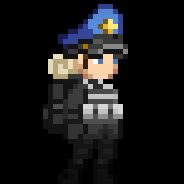

My favourite people
My one and only favourite person is
Anthony "Dwight" Vizoso

I love watching his STREAM and jawning my jawn while doing it!!! ;3
Welcome 2 my HOMEPAGE!
I love hobbies dude some of my epic hobbies are:
My one and only favourite person is
Anthony "Dwight" Vizoso
I love watching his STREAM and jawning my jawn while doing it!!! ;3
I'm genuinely excited to work on projects! The process of diving into new challenges, brainstorming creative solutions, and seeing ideas come to life is incredibly fulfilling. Each project feels like an opportunity to learn something new, collaborate with others, and push the boundaries of what's possible. I love the sense of purpose and accomplishment that comes with every step, from the initial planning stages to the final implementation. Being able to contribute my skills, work through obstacles, and see the impact of the work is what truly drives my passion. There's nothing quite like the joy of being part of a project that makes a difference!
Oh man sure do love working hard! Courtesy of chatGPT for the nice wordZ!
Substation 13 is an ss13 server I am working on myself :DDDDD
DISCORD LINK: https://discord.gg/58cPv39BSZ
Changelog 001#
in this changelog i add nutrient paste
Changelog 002#
in this changelog i add CUSTOMIZATIONS!!!!!!!!!
THIS IS THE END OF THE PAGE!!
THANX 4 VISITING :DDDDDDDDDDD
THIS IS THE END OF THE PAGE!!